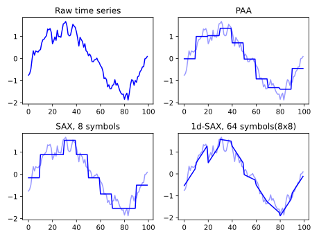

Note
Click here to download the full example code
PAA and SAX features¶
This example presents a comparison between PAA [1], SAX [2] and 1d-SAX [3] features.
PAA (Piecewise Aggregate Approximation) corresponds to a downsampling of the original time series and, in each segment (segments have fixed size), the mean value is retained.
SAX (Symbolic Aggregate approXimation) builds upon PAA by quantizing the mean value. Quantization boundaries are computed for all symbols to be equiprobable, under a standard normal distribution assumption.
Finally, 1d-SAX is an extension of SAX in which each segment is represented by an affine function (2 parameters per segment are hence quantized: slope and mean value).
[1] E. Keogh & M. Pazzani. Scaling up dynamic time warping for datamining applications. SIGKDD 2000, pp. 285–289.
[2] J. Lin, E. Keogh, L. Wei, et al. Experiencing SAX: a novel symbolic representation of time series. Data Mining and Knowledge Discovery, 2007. vol. 15(107)
[3] S. Malinowski, T. Guyet, R. Quiniou, R. Tavenard. 1d-SAX: a Novel Symbolic Representation for Time Series. IDA 2013.
# Author: Romain Tavenard
# License: BSD 3 clause
import numpy
import matplotlib.pyplot as plt
from tslearn.generators import random_walks
from tslearn.preprocessing import TimeSeriesScalerMeanVariance
from tslearn.piecewise import PiecewiseAggregateApproximation
from tslearn.piecewise import SymbolicAggregateApproximation, \
OneD_SymbolicAggregateApproximation
numpy.random.seed(0)
# Generate a random walk time series
n_ts, sz, d = 1, 100, 1
dataset = random_walks(n_ts=n_ts, sz=sz, d=d)
scaler = TimeSeriesScalerMeanVariance(mu=0., std=1.) # Rescale time series
dataset = scaler.fit_transform(dataset)
# PAA transform (and inverse transform) of the data
n_paa_segments = 10
paa = PiecewiseAggregateApproximation(n_segments=n_paa_segments)
paa_dataset_inv = paa.inverse_transform(paa.fit_transform(dataset))
# SAX transform
n_sax_symbols = 8
sax = SymbolicAggregateApproximation(n_segments=n_paa_segments,
alphabet_size_avg=n_sax_symbols)
sax_dataset_inv = sax.inverse_transform(sax.fit_transform(dataset))
# 1d-SAX transform
n_sax_symbols_avg = 8
n_sax_symbols_slope = 8
one_d_sax = OneD_SymbolicAggregateApproximation(
n_segments=n_paa_segments,
alphabet_size_avg=n_sax_symbols_avg,
alphabet_size_slope=n_sax_symbols_slope)
transformed_data = one_d_sax.fit_transform(dataset)
one_d_sax_dataset_inv = one_d_sax.inverse_transform(transformed_data)
plt.figure()
plt.subplot(2, 2, 1) # First, raw time series
plt.plot(dataset[0].ravel(), "b-")
plt.title("Raw time series")
plt.subplot(2, 2, 2) # Second, PAA
plt.plot(dataset[0].ravel(), "b-", alpha=0.4)
plt.plot(paa_dataset_inv[0].ravel(), "b-")
plt.title("PAA")
plt.subplot(2, 2, 3) # Then SAX
plt.plot(dataset[0].ravel(), "b-", alpha=0.4)
plt.plot(sax_dataset_inv[0].ravel(), "b-")
plt.title("SAX, %d symbols" % n_sax_symbols)
plt.subplot(2, 2, 4) # Finally, 1d-SAX
plt.plot(dataset[0].ravel(), "b-", alpha=0.4)
plt.plot(one_d_sax_dataset_inv[0].ravel(), "b-")
plt.title("1d-SAX, %d symbols"
"(%dx%d)" % (n_sax_symbols_avg * n_sax_symbols_slope,
n_sax_symbols_avg,
n_sax_symbols_slope))
plt.tight_layout()
plt.show()
Total running time of the script: ( 0 minutes 0.317 seconds)